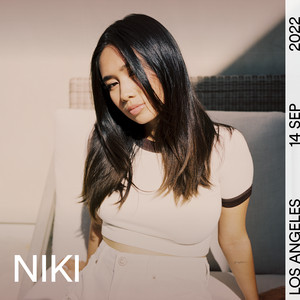

My childhood was a time of innocence and wonder. I spent my days exploring the world around me, learning new things, and making memories that would last a lifetime.
My teenage years were filled with growth and self-discovery. I faced challenges, made new friends, and developed my interests and passions. It was a time of learning who I am and what I want to become.
As I entered adulthood, I embraced new responsibilities and opportunities. I pursued my goals with determination, built meaningful relationships, and continued to grow as an individual. Adulthood has been a journey of self-improvement and fulfillment.
